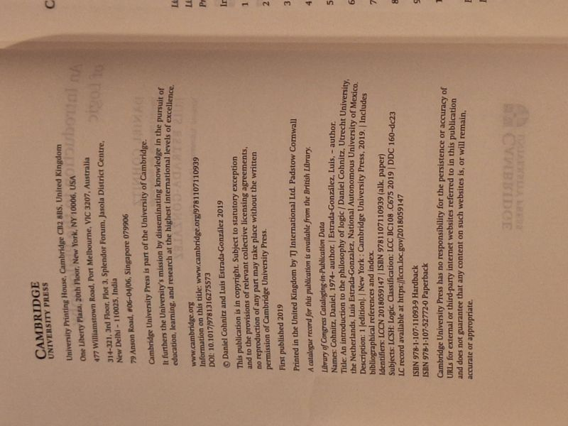

An Introduction to the Philosophy of Logic
Daniel Cohnitz, Luis Estrada-Gonzalez · Cambridge University Press (Cambridge Introductions to Philosophy), 2019

C$45 · Fine condition
Daniel Cohnitz and Luis Estrada-Gonzalez, An Introduction to the Philosophy of Logic (Cambridge University Press, 2019), in the Cambridge Introductions to Philosophy series. First edition. Softcover in Fine condition - clean, tight, and unmarked. A clear introduction to the central questions in the philosophy of logic: logical consequence, the nature of the logical constants, logical pluralism, and the relationship between formal systems and natural-language reasoning. Includes bibliographical references and index.
Details
- Publisher: Cambridge University Press (Cambridge Introductions to Philosophy), 2019
- Binding: Softcover
- Edition: First Edition (2019)
- Condition: Fine
- ISBN: 978-1-107-52772-0
- Category: Philosophy